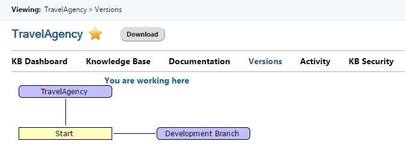
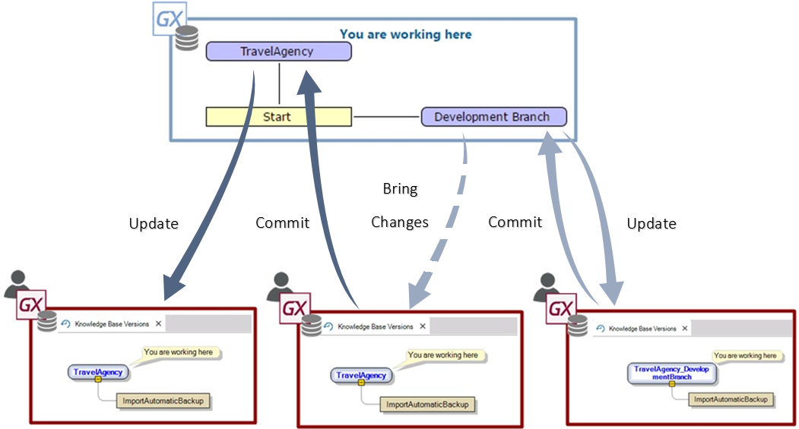
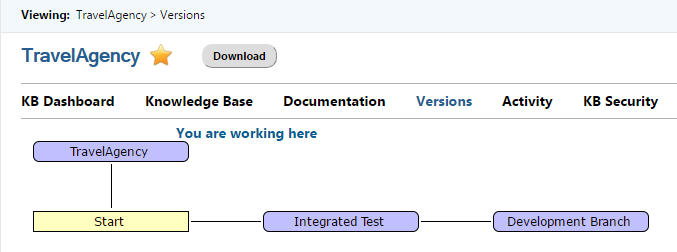
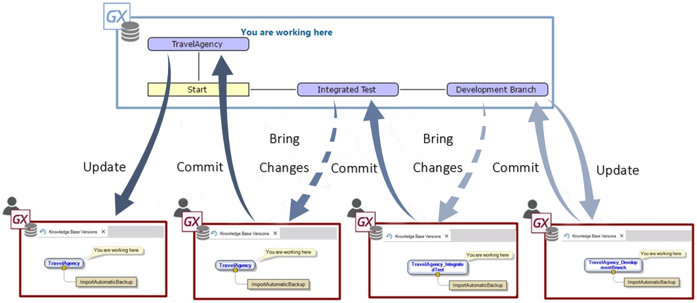

Versioning the application to manage the different stages of Validation or Approval is one of the Version Management and Work Methodology with GeneXus Server scenarios. It is common for companies to subject the versions released to clients or set for production to a validation or testing stage that takes place after the Commit done by developers. Such validation may be done in a single stage (where the case would be similar to the scenario described here), or, as it often happens, in multiple successive stages, each meant to test or validate a particular aspect of the development. For instance, in a given project we could have the following stages:
Each of these stages is completed one after the other, and we can only go on to the next level when the previous one has been approved. For example, if a particular change does not satisfy the Code Review, then we cannot go ahead with the Integration Test. For this reason, in this scenario, we need to define versions to manage the different stages of the validation or approval. Version ManagementWe first see a simplified scenario, with a single validation stage. For this simplified scenario, we will have to create, based on the main version, a parallel version for the developers to work on. Those in charge of carrying out the tests will be the ones who, in the event of the tests proving successful, will pass the changes on to the main version. This development version is created on the KB of GXserver, using the console or from the dialogue of Team Development in GeneXus, Tab Versions. 
For implementing this method using GeneXus Server, we will first see a simple scenario where we work with one development version and a single validation step since we can perform additional stages in an analogous manner. The development and testing work is organized as follows:
Every time that a developer needs to consolidate changes with the Knowledge Base in GeneXus Server, he must do a Commit to GeneXus Server. Likewise, when a developer needs to obtain the changes done by another developer, he must do an Update From GeneXus Server, to update the objects. Therefore, the General version keeps the changes that have been validated. With a Knowledge Base connected to that version it is possible to do Update From GeneXus Server and execute the application set up process, to take to the client the corresponding programs and the reorgs files.  Work Methodology with two validation stagesAs mentioned, we can have a single validation stage or several stages, and for the case of several steps, we work in parallel with several versions, with the requirement of passing changes on from one version to the other every time that changes are approved. In this case, the work methodology is similar to scenario Defining versions for each application release. In addition to describing a parallel version for development, we identify as many parallel versions as there are additional validation stages. For cases with two validation steps, like for example, Development Version, Integrated Test, and Production, we must define the following versions, all derived from the General version. 
 More than two validation stagesWhen we have the following stages: Code review, Integration Test, Functional Test, Pre-production Test, we should define the following versions, all derived from the main version and the same base point:
The last testing stage, called Pre-Production, is done with a Knowledge Base connected to the main version, used to set up an environment equal to the one that will be utilized for production, and trying to make is as similar as possible in what concerns hardware, software installed, configurations, and even operational data. The changes to be tested are obtained with Bring Changes from the Functional version, and only when the changes have been approved in this pre-production test can we do Commit to GeneXus Server on the main version. To set up the final version to be released or to roll it out, we use a Knowledge Base connected to the main version, from where we can only do Update From GeneXus Server and Build. We could go on with this scheme, and based on what we have seen, what grows is the middle column, where we can continue adding further validation stages (notice the different profiles with different colors and how the central profile increases).
|
| Backlinks |
| Versioning the application by Modules |